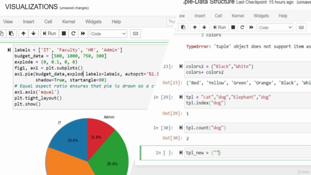
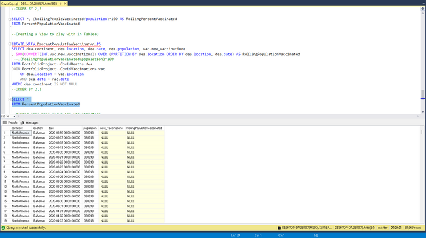
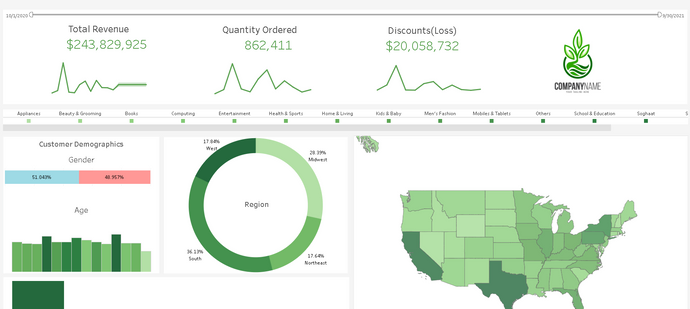

In this project, I used some common data analysis packages in Python to conduct EDA, data cleaning, and predictive analysis on a couple of datasets. Some of these packages include Pandas, Matplotlib, and Seaborn for data vizualizations.


In this project, I conduct some exploratory data analysis in SQL using two COVID datasets. One dataset contains data on covid deaths from around the world, while the other contains vaccination data. I use these two datasets together to answer some questions. This project showcases basic SQL queries, joins, aggregate functions, temp tables, and more.

Here are a few dashboards I created in Tableau using sample datasets. These dashboards showcase my understanding of using the right types of graphs to best display a given piece of data. Some features utilized in these dashboards are calculated fields, forecasting, and interactive filters.
In this project, I utilize Beautiful Soup in Python to scrape bitcoin price data daily from Binance.com. This data is automatically appended to a csv file daily for analysis